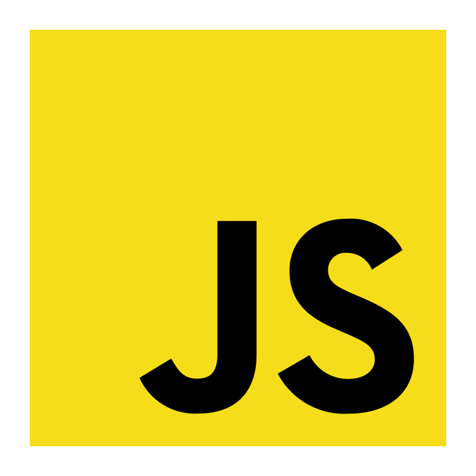
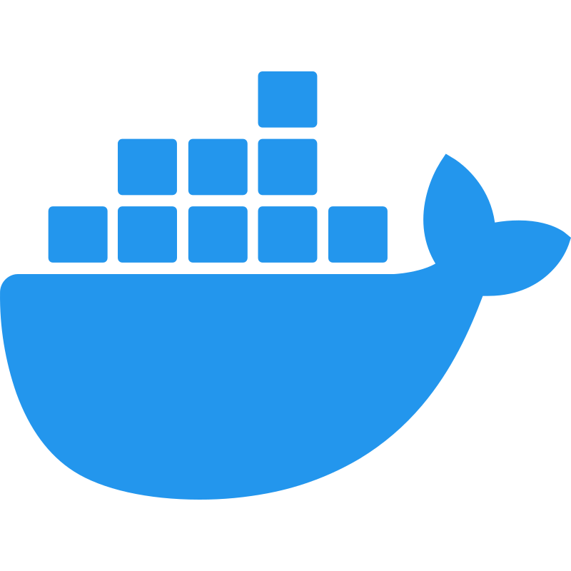
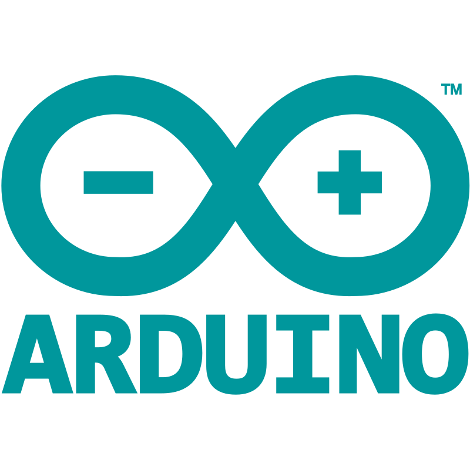
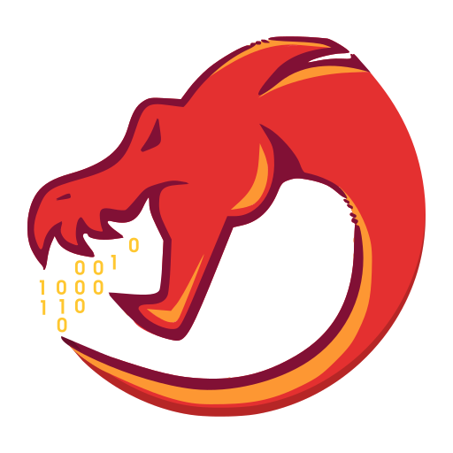
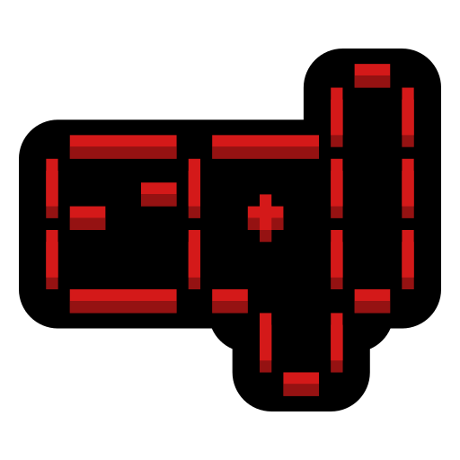
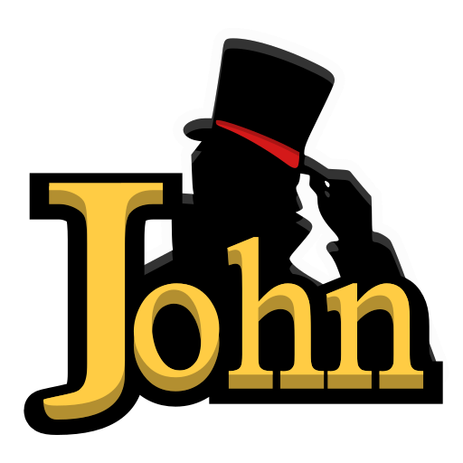

About Me
I'm Rylen Anil. I'm 16, based in Dubai, and currently in Grade 12 at JSS Private School. I work as a Junior Cybersecurity Engineer at C3iHub, IIT Kanpur, alongside school.
I like figuring out how things work, building things, and finding the parts that break. I wrote my first Python script at seven and got into ethical hacking around Class 8. You might know me from finding security flaws in the NEET and JEE Advanced exam portals. These days, I spend a lot of time on security research, full-stack projects, and Capture The Flag with g4mra. Along the way, I was added to the U.S. Department of Justice Vulnerability Hall of Fame for finding and responsibly reporting a vulnerability.
Away from the keyboard, I'm a big movie person. The Matrix and Terminator helped spark my interest in technology, and Mr. Robot is another favorite. I also like gaming and working on little side projects whenever I get the chance.
Technologies & tools
 Python
Python

JavaScript CSS3
CSS3

Docker Git
Git

Arduino Wireshark
Wireshark

Ghidra
sqlmap
John the Ripper